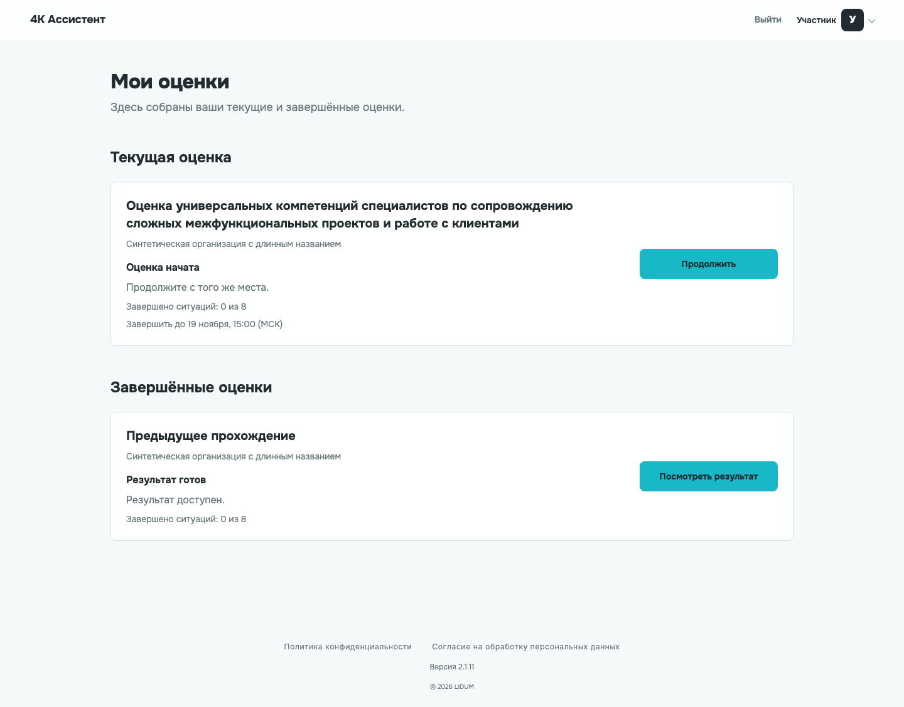
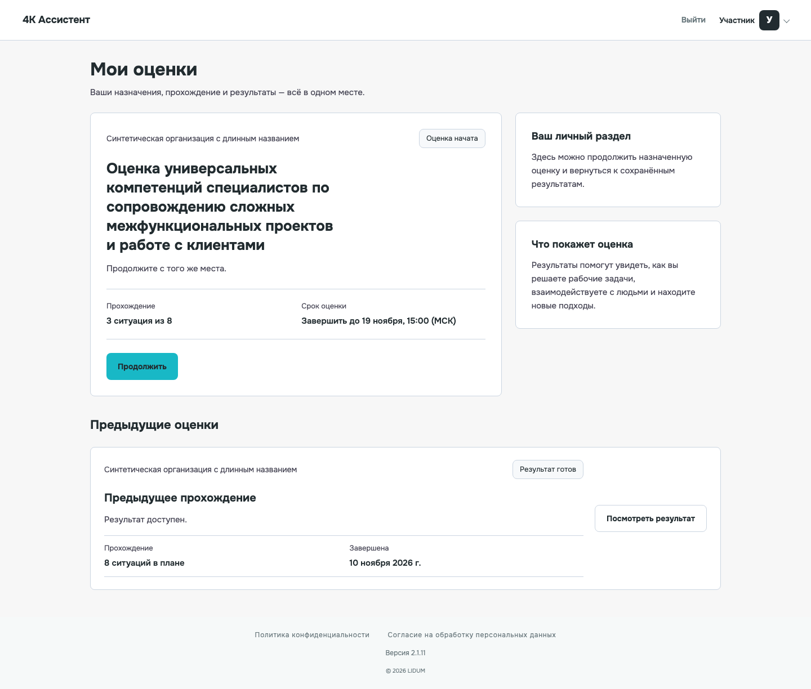
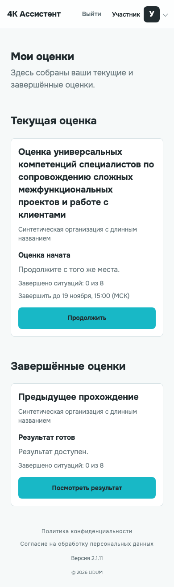
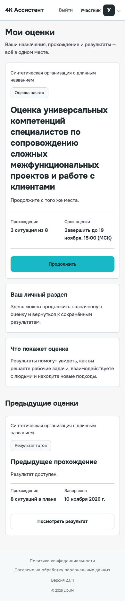

Локальный synthetic fixture. Одинаковые данные и viewport до/после. Визуальный ориентир — предоставленная спецификация v10, сохраняющая композицию v9. Version/SHA/publication подтверждены Sites API; точный source/live render v10 в этой сессии не проверялся.



